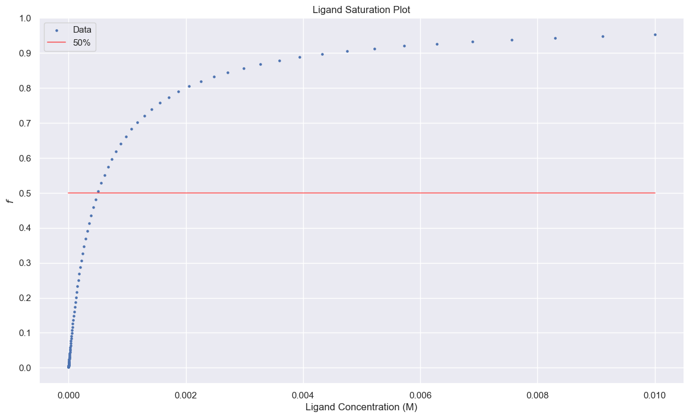
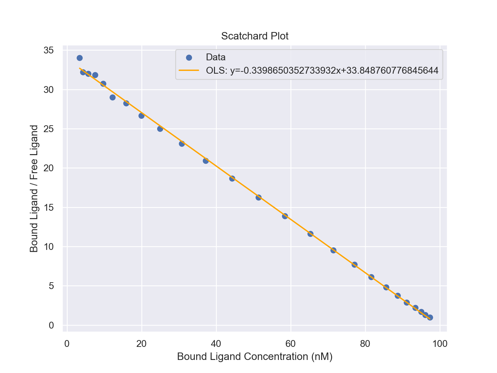

Protien-Ligand Binding
Introduction
Let us consider a ligand, L, that binds to a protein, P.
$$P+L\rightleftharpoons P\cdot L$$
The equilibrium for this reaction is
$$K_A=\frac{[P\cdot L]}{[P][L]}$$
Although it is traditional to talk in terms of the
dissociation reaction
$$K_D=\frac{1}{K_D}=\frac{[P][L]}{[P\cdot L]}$$
We can talk about the binding energy for the reaction through
$$\Delta G^0 = -RT \ln(K_A)$$
Fraction bound
Let us define a quantity, f, which is the fraction of proteins bound to ligand.
$$f\equiv \frac{[P\cdot L]}{[P]+[P\cdot L]}$$
It can be shown by substituting in the dissociation equilibirium that
$$f=\frac{[L]}{[L]+K_D}$$
We can see that when \([L]=K_D\), 50% of the proteins are bound to ligands.

In the common situation where the concentration of ligand is much greater than the concentration of receptor protein, we can make the estimation
$$[L]_{\text{free}}\approx[L]_{\text{total}}$$
Scatchard Plot
Since the receptor affinity is an important biochemical quantity, we can measure it via Schartchard plots
$$\frac{[L]_{\text{bound}}}{[L]}=-\frac{1}{K_D}[L]_{\text{bound}}+\frac{[P]_{\text{total}}}{K_D}$$

Python code:
np.random.seed(0)
# Simulated data (specific binding and free ligand concentrations)
P_total = 100e-9
K_D = 3e-9
L_free = np.geomspace(1e-10,1e-7,25)
f = L_free/(L_free+K_D)+np.random.normal(size=25,scale=1e-3)
P_L = f*P_total
model = sm.OLS(P_L/L_free,
sm.add_constant(P_L*1e9))
results = model.fit()
# Create the Scatchard plot
plt.figure(figsize=(8, 6))
plt.scatter(P_L*1e9,P_L/L_free, marker='o')
plt.plot(P_L*1e9,
results.predict(sm.add_constant(P_L*1e9)),
color='orange')
plt.xlabel('Bound Ligand Concentration (nM)')
plt.ylabel('Bound Ligand / Free Ligand')
plt.title('Scatchard Plot')
plt.grid(True)
plt.legend(['Data',
f'OLS: y={results.params[1]}x+{results.params[0]}'])
plt.show()
As you add more ligand into the system, \([L]_{\text{bound}}\) increases, not all of the ligand added will be bound.
In fact, what you notice is that the marginal percentage of the added ligand that binds goes down.
So what the negative slope kind of means is that as \([L]_{\text{bound}}\) increases, you will need to add even more ligand than before to get the same increase in \([L]_{\text{bound}}\).
Perhaps an easier way to visualize it is to look at the regular binding isotherm graph. Take any point and note its y-value. For example, \([L]=K_D\), you'll see the the fraction bound is 1/2. If you had twice the amount of ligand in the solution, so that now \([L]=2\times K_D\), your fraction (of protein) bound is not 1, rather it is less. So you can see from the hyperbolic shape of the graph that for the same marginal amount of ligand being added, your change in the fraction of proteins bound is less positive as [L] gets larger, asymptotically approaching f=1.
\([P\cdot L]=[L]_{\text{bound}}\)for the specific case, so you can also think of it in terms of not doubling when you go from
\([L]=K_D\) to \([L]=2K_D\). So, as [L] goes to infinity, \([L]_{\text{bound}}\) approaches a finite value, which is \([P_{\text{total}}]\), so mathematically when
\([L]_{\text{bound}}\) is at its highest value (most right on x axis for Scatchard), \(\frac{[L]_{\text{bound}}}{[L]_{\text{free}}}\) would be a finite number over infinity, or zero, where \([L]_{\text{free}}\approx [L]\)
when \([L]_{\text{free}}\gg [L]_{\text{bound}} \)
To somewhat draw a parallel to a similar concept from general chemistry is percent ionization in weak acids. As you increase the concentration of your weak acid in a solution, the percent that is in the dissociated state will go down and the ratio
\([A^{-}]/[HA]\)will go down. So at a 100mM concentration of weak acid, you will have a higher [A-] than you would at 1mM, BUT the ratio of \(\frac{[A-]}{[HA]+[A-]}\) or \([A^{-}]/[HA_{total}]\) is smaller in the 100mM solution. You get diminishing returns.